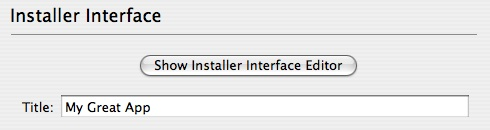
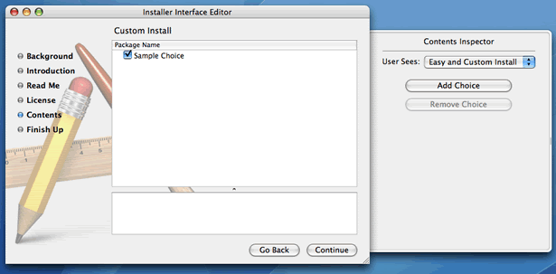

Specifying the Interface
Like packages and metapackages, a distribution has a title. In PackageMaker, you can set the Title in the “Installer Interface” pane. Also, the same localizable resources can be specified for a distribution (background image, welcome, read me, and license). These items can also be specified in the “Installer Interface” tab.
 Specifying the Title and Accessing the Interface EditorIn addition to these resources, a distribution also gives you control of the “Custom Install” pane of the Installer. This differs from a metapackage, whose “Custom Install” pane is constructed based on the packages it contains.
Within PackageMaker, you can customize the “Custom Install” pane by adding choices, which are the checkboxes that will be displayed in the pane. Choices can be added in the “Distribution Details” sidebar or in the “Installer Interface Editor” available in the “Installer Interface” pane.
 Editing choices in the Installer Interface EditorChoices can be arbitrarily nested, allowing for subchoices, sub-subchoices, and so on. Each choice can have one or more package references associated with it. Packages are added via drag-n-drop, the Project > Add Package… menu item, or the Project > Add Package Reference… menu item. The packages associated with a choice will be installed if that choice is selected by the user during install.
Choices have a number of properties that can be set by selecting them in either the “Distribution Details” sidebar or within the “Installer Interface Editor”:
- The title, tooltip, and description will be presented to the user during install and can be localized.
- The identifier is primarily used for scripting and should generally be unique among all choices.
- If a custom location is specified, the Installer will allow the user to specify where the packages for that choice should be installed.
 Editing a choice
Editing a choice
Choices also be selected (checked or unchecked), enabled/disabled, and visible/invisible. These state variables are controllable via JavaScript, which can be edited in the same place as the other choice properties. The package author can specify an initial state, as well as how the state should change in response to events, such as the user selecting other choices.
More Info…